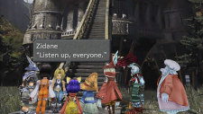
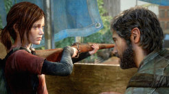
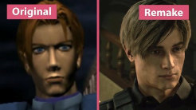

Um jogo incrivel com uma das melhores histórias que eu já vi no mundo dos games. Chorei muito com o final porque foi extremamente emocionante
Para mim o melhor jogo em questão de história de 2013. Toda a questão de sobrevivencia e o apego que desenvolvemos com Joel e Ellie ao decorrer da história foi muito bem trabalhada!
Neste jogo podemos controlar Leon S. Kennedy e Clair Redfield em posto de polícia em um cenário aterrorizante. Para mim O original e remake estão no mesmo nível de qualidade, mas recomendo jogar primeiro o remake para os menos acostumados a jogos antigos (mas claro, de preferencia jogue o original logo em seguida).
